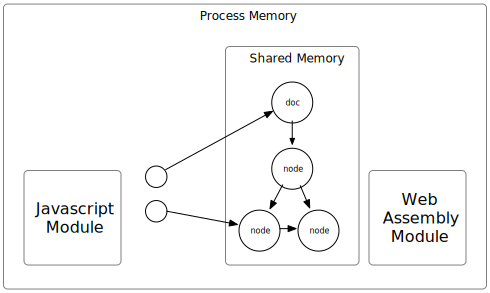

The architecture of libxml2-wasm is shown as the following diagram.

We compile the libxml2 C code into a web assembly module that uses a memory buffer as its heap.
This allows us to store data and share it with Javascript.
However, the data are in the form of C structs,
which are not easy to use in Javascript.
To solve this problem,
we create some Javascript classes that wrap the data and provide convenient methods.
The diagram illustrates how the XML's DOM structure is stored in the shared memory using many objects (C structs and C strings).
However, not all of these objects have a corresponding wrapper object on the Javascript side,
because only some nodes in the DOM structure may be accessed by its user.
WebAssembly module does not have garbage collection, which means that the users are responsible to the memory management and have to explicitly free the memory they use.
However, there is a clear ownership hierarchy among the objects, so the users only have to free the root object and not every single node. For instance, when a doc object is freed, all the nodes inside this doc are also freed.
To dispose an object, call the dispose method from its wrapper:
doc.dispose();
The proposed using declaration, which is already in TypeScript 5.2, is also supported.
If your environment supports, you can
using doc = XmlDocument.fromBuffer(xmlBuffer);
at the exit of the local scope of doc,
[Symbol.dispose]() is called.
Besides DOM, other objects own Web Assembly memory need to be disposed too.
These classes have a base class XmlDisposable.
The owner javascript classes (subclasses of XmlDisposable) can be garbage collected by javascript runtime.
Once it is GC'ed, it will try to release the managed resource if the dispose() hasn't been called.
However, this automatic dispose is a better-than-nothing workaround.
The DOM object tree, stored in the shared memory, contains all the information of the XML content. It consumes much more memory than the javascript wrapper objects in almost all cases. Meanwhile, the shared memory is very limited comparing to the memory where the javascript objects reside. Thus it is very likely that the out-of-memory error occurs from the web assembly before GC is triggered.